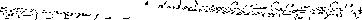

Class 10 Stat701 Fall 1997
Fitting the Nerlove data.
Key points from the econometric models

- All multiplicative models - giving percentage change interpretations
on the log scale.
- Learning is proxied by the cumulative output.
- Level of technology is also proxied by the cumulative output
- Models have some obvious limitations - returns to scale does not
depend on the level of X.
- Can still value the models if you buy into them as approximations to
a ``local'' reality.
- Models manufactured to mirror economic theory.
- A possible more hard-nosed approach. If your only objective
is to predict cost, FORGET the theory, use and manipulate the
explanatory variables in anyway that lets you do ``good'' prediction -
closer to the Stat621 regression project view of the world.
Statistical points from Berndt
- Underspecification -
what's the impact of leaving out a variable that should be in the model?
- What's the impact of fitting
when the true model is

- Answer: typically it biases the estimates of those that are left in -
unless

- The left out variable is uncorrelated with those that are in.
-
- If you can design an experiment, it is often a good idea to build this feature in - make the X-s uncorrelated (aka orthogonal).
- In the underspecified model RMSE is biased upwards - so you tend to be conservative - p.values too big, PI's too wide.
- Berndt on p.75 (3.35) recovers the returns to scale parameter
r by using the relationship
 and likewise for
. He then goes on to say that one cannot in general directly employ the estimated standard errors of and to compute confidence intervals for r and .
and likewise for
. He then goes on to say that one cannot in general directly employ the estimated standard errors of and to compute confidence intervals for r and .
- However, there is a very computer intensive way of finding standard
errors and confidence intervals for just about any ``smooth'' function
of the original parameters. It is called the BOOTSTRAP.
- Idea behind the bootstrap.
- Resample your data - take a random sample with replacement of rows from your spreadsheet.
- Recompute the regression and related statistics from this resampled
dataset.
- Repeat many times, obtaining a bootstrap sample of parameter estimates.
- Estimate the standard error by calculating the standard deviation
of the resampled estimates.
- Obtain bootstrap confidence intervals from the quantiles of the resampled
estimates
Richard Waterman
Mon Oct 6 23:04:14 EDT 1997